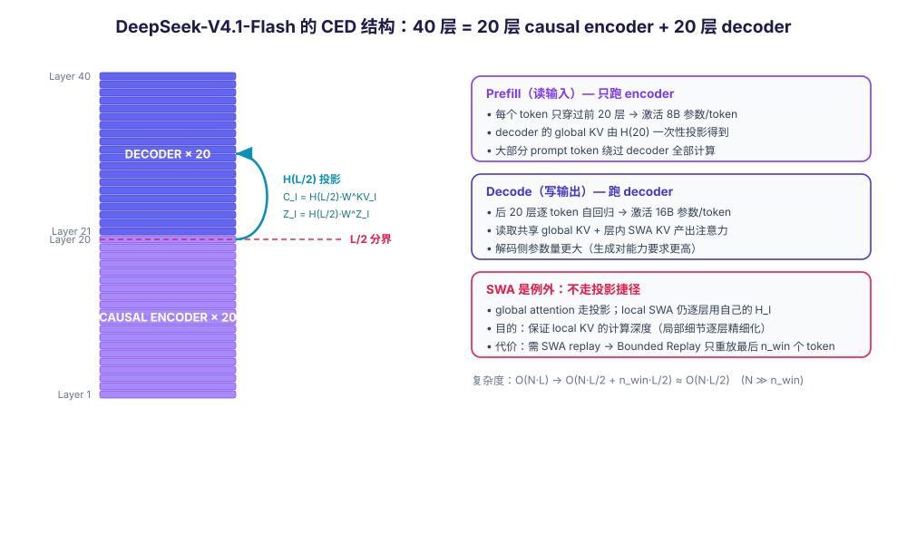

2026-09-13 · Damon + Nemesis · 分类：LLM 架构 · 标签：DeepSeek, CED, Encoder-Decoder, CSA2, KV Cache, MoE, 稀疏注意力
一、背景：V4.1-Flash 要解决的是什么问题
DeepSeek-V4.1-Flash（2026-09-10 发布）的整篇技术报告，副标题就是一句话：Pushing the Limits of KV Cache Compression（把 KV cache 压缩推到极限）。
它的出发点不是"模型不够聪明"，而是成本结构变了：
- 长程 agent 应用普及后，模型负载变成 input-heavy——agent 反复调用工具、反复把文件/日志/历史轮次塞回上下文，请求里绝大多数 token 是"输入"而不是"输出"。
- V4 已经通过稀疏注意力（CSA/HCA）大幅降低了长序列的计算成本，于是瓶颈转移到了：prefill 计算 和 KV cache 的存储 / 持久化 / 传输（HBM 容量、SSD 容量、I/O 带宽）。
- 每次 KV cache miss 都要重新 prefill 整段输入，这在 agent 场景下是常态而非例外。
所以 V4.1-Flash 的两条主线是：
- CED（Causal Encoder-Decoder） → 砍 prefill 计算（近一半）
- CSA2 + FP4 KV + SWA Bounded Replay → 砍 KV cache 的存储与持久化开销
二、模型规格
| 项目 | DeepSeek-V4-Flash | DeepSeek-V4.1-Flash |
|---|---|---|
| 架构 | Mixture-of-Experts decoder | Causal Encoder-Decoder (CED) |
| 语言主干层数 | —— | 40 层（20 encoder + 20 decoder） |
| Backbone 参数 | 284B | 552B |
| 条件记忆参数 | 无 | Engram 196B（独立于 backbone） |
| 每 token 激活参数 | 13B | prefill 8B / decode 16B |
| 注意力 | CSA + HCA 混合 | 纯 CSA2（+ 层次化稀疏 indexer） |
| 主 KV 精度 | FP8 | FP4（SWA KV 仍为 FP8） |
| 全局 KV cache | 基准 | 890 字节/token ≈ 1/4 |
| 持久化 KV cache | 基准 | ≈ 1/8 |
| 上下文长度 | 1M | 1M |
| 多模态 | 独立实验模型 | 原生（预训练起就纳入） |
| 预训练语料 | 32T+ tokens | 45T tokens（多模态语料） |
模型结构的关键数字：40 层 Transformer，从中间劈成两半——下 20 层是 causal encoder，上 20 层是 decoder。每层都同时含全局注意力和滑动窗口注意力（SWA），只有最前面两层例外（纯 SWA）。

三、CED 机制详解
3.1 一句话概括
把 decoder-only 的深层堆叠从中间切开：前半段只负责"生成一份 KV 笔记"，后半段拿着这份笔记开始写作——而不需要把原文再逐层读一遍。
3.2 层的划分
设总层数 L = 40：
- 下 L/2 层（第 1–20 层）= causal encoder
- 上 L/2 层（第 21–40 层）= decoder
这个划分只作用于全局注意力路径，SWA 路径另有安排（见 3.4）。
3.3 核心：全局注意力的 KV 由 encoder 末层投影而来
这是 CED 与一切传统架构的分水岭。
对于 decoder 的任意一层 l > L/2，它的全局 KV 条目不再由自己的隐状态 Hl 产生，而是直接从第 L/2 层（即 encoder 最后一层）的隐状态 HL/2 投影得到：
其中：
- Cl 是该层的 KV 条目，Zl 是对应的压缩权重（与 MLA 的 latent 结构呼应）；
- WKVl、WZl 是逐层独立的可学投影权重——这是关键细节：虽然所有 decoder 层拿的是同一个 HL/2，但每一层有自己的投影矩阵，因此得到的 KV 各不相同，层间仍然保留差异化表达。
直接后果：prefill 阶段只需要跑前 L/2 层，就能以极小的额外代价拿到整个 decoder 的全局 KV cache。这就是 prefill 计算量近乎减半的来源。
3.4 SWA 是刻意保留的"例外"
CED 并没有把所有注意力都替换成投影。滑动窗口注意力（SWA）仍然保持逐层的常规计算——任意一层 l 的局部 K/V 都由该层自己的隐状态 Hl 得到。
这样做的目的是保住 local KV 的计算深度：局部依赖是逐层精细化提炼的，不能被一次投影草率替代。
但代价随之而来：既然 decoder 的 SWA KV 必须由各层自己算，prefill 时就需要把 decoder 的局部窗口"重放"一遍，代价是额外的 nwin × L/2 个 token。
解决方案是 Decoder SWA Bounded Replay：只对 prompt 的最后 nwin 个 token 做 SWA prefill。依据是已有工作（Chen et al., 2025）发现 SWA 的实际有效感受野远小于理论值 nwin × L/2。论文报告这样做只有可忽略的性能损失。
这个取舍的意义在于：它建立了一个新的存储–计算折中——不再把 SWA KV 持久化到 SSD，而是在需要时用少量重算近似恢复。同一套思路也用在 encoder 侧的 SWA 状态重建上（host memory 中只保留长期存活的 global KV，短时 SWA 状态用 bounded replay 重建）。
3.5 复杂度
对序列长度 N ≫ nwin：
也就是 prefill 总计算量减少约一半。
3.6 与 CSA2 的协同
CED 和 CSA2 解决的是互补的两类成本：CED 管 prefill 计算，CSA2 管 KV 存储。
两者结合时的细节：decoder 中第一个被分配为 Full Mode 的 CSA2 层，它的全局 KV 就是从第 L/2 层的隐状态投影来的；Reindex / Reuse 两种模式不受 CED 影响。
此外，层次化稀疏 indexer（Hierarchical Sparse Indexer）只在 CED 的 decoder 里启用：第一个 Full Mode 层照常扫描全部因果可见位置并选出自己的 Top-K，同时做块级候选筛选（每个块取块内最大 index 分数，选最高分的若干块，例如 2048 块 × 8 位置 = 16,384 个候选位置）→ 构成一个共享候选池。后续 Reindex 层只在这个池子里打分。
效果：对固定候选池大小，深层 indexer 每 query 的打分成本从"随上下文长度线性增长"变成常数。只有第一个 Full Mode 层仍需全范围扫描。
3.7 非对称激活意味着什么
| 阶段 | 跑的层 | 激活参数 | 角色 |
|---|---|---|---|
| Prefill | 前 20 层 | 8B | "读"——把输入压缩成 KV 笔记 |
| Decode | 后 20 层 | 16B | "写"——真正生成输出 |
decode 侧激活更多参数，是因为生成对能力的要求高于读取：读只需要把信息整理成可用的 KV 表示，写则要调用完整能力去做推理和产出。
这个非对称设计精准命中了 agent 负载的特征——读远多于写，所以把便宜留给读、把能力留给写。
四、与经典 Transformer Encoder-Decoder 的区别
这是本文最需要说清的部分。CED 名字里带 "Encoder-Decoder"，很容易让人直接套用 Vaswani et al. (2017) 的经典结构——但两者几乎在每个关键维度上都不同。
4.1 逐维对比
| 维度 | 经典 Transformer Encoder-Decoder | DeepSeek CED |
|---|---|---|
| Encoder 注意力方向 | 双向（无 causal mask），作用是"理解源序列" | 因果 / 单向（causal encoder）——因为它本质是自回归 LM 的前半段 |
| Decoder 如何取用 encoder 输出 | Cross-Attention：decoder 每一层、每一步都重新读取 encoder 的全部输出 | 不是 cross-attention：把 encoder 末层 HL/2 一次性投影成 decoder 的 global KV cache（式 1） |
| 参数量/激活的对称性 | 通常对称（encoder / decoder 规模相当） | 非对称：prefill 8B / decode 16B |
| 层结构 | encoder 独立栈 + decoder 独立栈，两套权重 | 同一套 40 层 backbone 切成 20 + 20 |
| 训练目标 | Seq2seq（teacher forcing，源序列 → 目标序列） | 纯自回归 next-token prediction |
| 设计动机 | 跨序列条件生成（翻译、摘要）：源与目标分布不同 | 省 prefill 计算 + 压 KV cache，与"跨序列对齐"无关 |
| SWA / 局部注意力 | 无（经典结构不含 SWA） | 有，且刻意不走投影捷径，逐层计算 local KV |
4.2 三个本质差异
差异一：encoder 的角色完全不同。
经典 E-D 里，encoder 是理解器——它把源语言句子编码成一组供 cross-attention 调用的上下文表示。
CED 里，encoder 是 KV 生成器——它存在的意义是产出一份可被投影的、供 decoder 使用的全局 KV 缓存。它不"理解"什么，它"准备"什么。
差异二：decoder 访问 encoder 信息的方式完全不同，这是性能差异的根源。
- 经典 E-D：decoder 的每一层都带一个 cross-attention 子层，每一步解码都要 attend 一遍 encoder 的完整输出 memory。encoder 的输出被反复读取 L/2 次。
- CED：decoder 只在第 L/2 层（encoder 末层）拿到一次 HL/2，用逐层投影权重把它一次性映射成各层自己的 global KV，之后 decoder 各层就基于这份共享 KV 工作，不再回读 encoder。
正因为 CED 把"逐层重读"换成了"一次投影"，prefill 才能只跑一半的层——这才是计算量减半的机制，而不是简单地减少层数。
差异三：因果性要求不同。
经典 E-D 只有 decoder 需要因果性；encoder 是双向的，这恰恰是它"理解源序列"的能力来源。
CED 则必须让 encoder 也保持因果。原因很直接：decoder 的 global KV 直接来自 encoder 输出 HL/2。如果 encoder 用了双向注意力，HL/2 就会包含当前位置之后的 token 信息；这些信息被投影成 decoder 的 KV 后，等于让 decoder 在预测第 t 个 token 时"看见"了未来——直接破坏自回归训练目标。
所以 encoder 必须是 causal 的。这也正是它叫 Causal Encoder-Decoder 而不是 Encoder-Decoder 的原因——这个名字里的 "Causal" 就是与经典结构的分野标志。
4.3 一句话总括
经典 E-D 是"两个序列之间的翻译器"：encoder 双向理解源句，decoder 用 cross-attention 反复查阅源句，逐词生成目标句。
>
CED 是"单个自回归模型的省算力切法"：前一半层把输入榨成一份 KV 笔记，后一半层拿着笔记直接开始写——没有源/目标之分，没有 cross-attention，只有一次投影和一份共享缓存。
五、相对 DeepSeek-V4 的架构升级
V4.1-Flash 相对 V4-Flash 不是简单放大（参数从 284B 涨到 552B），而是在每个维度上都有结构改动。
5.1 升级清单
| 维度 | DeepSeek-V4 | DeepSeek-V4.1-Flash | 目的 |
|---|---|---|---|
| 架构范式 | Decoder-only | CED（20 encoder + 20 decoder，非对称 8B/16B） | 砍 prefill 计算 |
| 注意力 | CSA + HCA 混合 | 纯 CSA2 | 简化 + 统一复用策略 |
| 跨层复用 | 无 | CSA2 跨层 KV / index 复用（Full / Reindex / Reuse 三模式） | 砍 KV 存储 |
| Indexer | 全范围打分 | 层次化稀疏 indexer（候选池） | 深层 indexer 成本降为常数 |
| 主 KV 精度 | FP8 | FP4（MXFP4 E2M1，SWA KV 保留 FP8） | KV 存储近半 |
| 部署 | 混合 SWA 缓存策略 | SWA Bounded Replay | 持久化 KV 降到 1/8 |
| 残差 | mHC（多 kernel） | Single-Pass mHC + Mega-mHC kernel | activation 访存减半 |
| 条件记忆 | 无 | Engram 196B | 记忆与计算解耦 |
| 投机解码 | MTP（与 backbone 联合训练） | DSpark（独立训练阶段） | 提升解码吞吐 |
| 优化器 | Muon | head-wise Muon + Engram 用 momentum/Sinkhorn | 逐头 preconditioner |
| 多模态 | 无 | 原生（DeepSeek-ViT + MLP projector） | 视觉理解内置 |
| 预训练 | dense warmup 后再引入稀疏 | 稀疏注意力从 64K 直接从头训 | 去掉 warmup 阶段 |
| 语料 | 32T+ tokens | 45T tokens（多模态） | 数据质量与覆盖 |
5.2 逐项说明
① CSA2：从"混合"到"纯复用"
V4 用 CSA（压缩 + 稀疏选择）+ HCA（重压缩 + dense）交错。V4.1 改成纯 CSA2，并把复用做到了三个可乘的维度上：
- entry 维度：GQA 减少 KV head 数，MLA 让多个 head 共享一个小的 latent；
- 序列维度：每 m 个 token 压成一个 entry；
- 层维度：跨层复用 KV 与 Top-K 索引。
三种静态分配的模式：
| 模式 | 自己算什么 | 复用别人的什么 |
|---|---|---|
| Full | main KV、indexer Q，并从 main KV 投影出 indexer K，跑 indexer 得到新 Top-K | —— |
| Reindex | indexer Q（重新打分） | 复用前一层的 main KV + indexer K，但选新的 Top-K |
| Reuse | 只算 main Q 和 SWA KV | 复用前一层 main KV 和 Top-K 索引，不跑 indexer |
三者都自己计算 main Q 和 SWA KV。关键在于缓存共享与索引复用被解耦：Reindex 模式让存储共享的同时，稀疏选择仍可逐层变化。
相对 V4 的 CSA，CSA2 还简化了 compressor：去掉相邻压缩条目的重叠、去掉压缩时的绝对位置编码，并且 indexer K 直接由 main KV 投影得到（不再是独立压缩路径）。
② 层次化稀疏 indexer
跨层索引复用减少了 indexer 的次数，但剩下的 indexer 仍要扫全上下文。层次化设计让第一个 Full Mode 层建立候选池，后续层只在池内打分 → 每 query 成本从线性变成常数。这个机制是训练感知的（训练和推理用同一限制域），在 post-training 阶段引入。
③ FP4 主 KV cache
V4 已经对 indexer 的 QK 做了 FP4 QAT。V4.1 把 QAT 扩展到 main KV cache：
- 用 OCP 标准 MXFP4 格式（为硬件兼容性，宁可牺牲一点精度）；
- 选 E2M1 + 每 16 通道一个 E4M3 scale（跟随 NVFP4，但去掉二级全局 scale以简化布局）；
- 论文论证省略全局 scale 是安全的：RMSNorm 后 512 通道 KV latent 的 L2 范数上界约 √(512) ≈ 22.6，而该格式能表示的幅值上限是 448 × 6 = 2688，留有充裕动态范围；
- 量化在 RoPE 之后做（RoPE 前量化仅有边际提升，却增加解码开销）；
- SWA KV 保留 FP8（对量化更敏感）。
相对 V4 的 FP8 主 KV，存储足迹在 HBM 和 SSD 上都近乎减半。
④ SWA Bounded Replay
V4 对持久化 SWA KV 用混合策略（Full Caching / Periodic Checkpointing / Zero SWA Caching）在存储与重算间取舍。V4.1 的做法是不持久化 SWA KV，需要时只重放最近 nwin 个 token 重建 → 持久化 KV 降到约 1/8。
⑤ Single-Pass mHC + Mega-mHC
V4 的 mHC 在相邻 block 间维护 n 条残差流，部署时用三个 kernel 顺序执行（残差更新 → 系数预测 → 输入混合），activation 访存是理想下界 (2n+2)d 的两倍（(4n+4)d）。
Single-Pass mHC 把输入混合系数错开一个 block（每个 block 用上一个 block 产生的系数）：
这样输入混合不再依赖本 block 当场算出的 Al，消除了数据依赖 → 可以融合成单个 Mega-mHC kernel，达到 (2n+2)d 的理想访存，activation memory traffic 减半。论文报告这个错位只带来可忽略的性能损失。
⑥ Engram：把"记忆"从"计算"里拆出来
196B 参数的条件记忆模块，均分到两个模块，放在第 1 层和第 14 层（平衡训练流水线各 stage 的显存）。配置：N-gram 阶数 {2, 3, 4}、8 个 hash head、每阶 embedding 维度 2048、每个 head 索引约 16M 条目（表大小取不同素数）。embedding 表与 key/value 投影都用 FP8。
相对原始 Engram 的两处改动：去掉短因果卷积（收益不足以抵消推理栈复杂度）；embedding 用 momentum 更新 + Sinkhorn 平衡优化。
推理时确定性寻址让 embedding 可以从 host memory 通过后台 RDMA 预取，第一个模块的预取与第一个 Transformer block 的计算重叠。
⑦ DSpark：替换 MTP 的投机解码
Drafter 是 3 个 Transformer block（SWA 窗口 128）。一次前向并行算出 5 个 draft 位置的 base logits，另有一个轻量 Markov head 建模 draft token 间的依赖；confidence head 预测每个位置的条件接受概率，进而估计前缀存活概率；scheduler 结合引擎吞吐曲线动态选择验证长度，最大化系统级吞吐。
关键差别：V3 的 MTP 是与 backbone 联合训练贯穿预训练；DSpark 在预训练之后单独训练（backbone 冻结），post-training 阶段一起训但不回传梯度到 backbone。V4.1 的 backbone 预训练直接去掉了 MTP 模块。
⑧ 优化器：head-wise Muon
把 Query 权重按 head 切开再施加 Muon 更新。把 Muon 看作预条件梯度下降后，原版 Muon 对所有 head 用同一个 preconditioner，head-wise 版本让不同 head 有各自的 preconditioner，能更好地处理注意力头之间的异质性。
另外，给 Engram 参数用 Adam 会大幅推高优化器状态显存，因此 Engram embedding 表、token embedding 和 prediction head 改用 momentum 更新 + Sinkhorn 平衡。
⑨ 原生多模态
输入通路 = 视觉编码器 + MLP projector。
- DeepSeek-ViT：基于 ViT 从头训练，支持任意分辨率——用 2D-RoPE 替代绝对位置编码；为兼容 Muon 优化器，把 patch embedding 的卷积换成线性投影；用 RMSNorm + SwiGLU。
- 3×3 pixel-unshuffle：把视觉 token 数减少到 1/9，从而支持约 1344×1344 的输入分辨率。
- 模态特定的无辅助损失负载均衡：图像和文本 token 的表示分布不同、专家路由偏好也不同。V4.1 为两种模态分别维护一套专家偏置，各自独立更新——避免用聚合负载掩盖模态内的不均衡。
⑩ 训练与后训练
- 预训练 45T tokens 多模态语料；稀疏注意力从 64K 序列长度直接从头训，没有任何 dense attention warmup 阶段。
- 后训练没有算法创新：就是标准 SFT → RL → OPD 三段式，改动全在数据管线（大规模自动化数据合成、环境构建，逐步扩大 RL 的数据/任务/rollout 规模）。
六、效果验证
6.1 KV cache 与计算量
| 指标 | 结果 |
|---|---|
| 全局 KV cache（常驻 HBM） | 890 字节/token，约为 V4-Flash 的 1/4 |
| 持久化 KV cache（SSD / host memory） | 约为 V4-Flash 的 1/8 |
| 相对初代 DeepSeek-V1 | 每 token 全局 KV 缩小约 437 倍 |
| Decode FLOPs vs 上下文长度 | 上下文从 4K 扩到 1M（256 倍），Decode FLOPs 只增加 1/4 |
| HBM / SSD 需求 | 分别降至 1/4 和 1/8 |
论文 Figure 2 显示：V4.1-Flash 的单 token Decode FLOPs 随上下文长度几乎保持恒定——这是 CED + CSA2 组合的直接结果。
6.2 Base 模型对比（论文 Table 1）
| Benchmark | V4-Flash-Base | V4-Pro-Base | V4.1-Flash-Base |
|---|---|---|---|
| 激活参数 | 13B | 49B | 8B / 16B |
| Backbone 参数 | 284B | 1.6T | 552B |
| AGIEval | 83.9 | 84.4 | 83.4 |
| MMLU-Pro | 68.3 | 73.5 | 74.1 |
| C-Eval | 92.1 | 93.1 | 92.1 |
| MultiLoKo | 42.6 | 50.9 | 45.5 |
| SimpleQA-Verified | 30.1 | 55.2 | 42.3 |
| SuperGPQA | 46.5 | 53.9 | 53.1 |
| BBH | 86.9 | 87.5 | 86.1 |
| DROP (F1) | 88.6 | 88.7 | 87.9 |
| HumanEval | 69.5 | 76.8 | 79.4 |
| GSM8K | 90.8 | 92.6 | 93.0 |
| MATH | 57.4 | 64.5 | 61.1 |
| MGSM | 85.7 | 84.4 | 80.2 |
| LongBench-V2 | 44.7 | 51.5 | 45.2 |
| MMMU-Pro | —— | —— | 56.5 |
| DocVQA | —— | —— | 95.6 |
论文的说法是：V4.1-Flash-Base 的世界知识、推理、编码能力与 V4-Pro-Base 相当，在 held-out 评测上提升 5%–10%，只用了 1/3 的总参数和 1/4 的激活参数。
但要注意一个诚实的数据点：SimpleQA-Verified 上 V4.1（42.3）明显低于 V4-Pro（55.2），MultiLoKo（45.5 vs 50.9）、MGSM（80.2 vs 84.4）也落后。参数体量的差距在纯知识类任务上依然存在。
6.3 与前沿模型对比（论文 Table 3，节选）
| Benchmark | Opus-5 | GPT-5.6 Sol | K3 | GLM-5.3 | DS-V4-Pro | DS-V4-Flash | DS-V4.1-Flash |
|---|---|---|---|---|---|---|---|
| GPQA Diamond | 93.4 | 94.1 | 92.9 | 88.1 | 92.4 | 89.9 | 90.9 |
| Codeforces (Rating) | —— | —— | 3348 | 3289 | 3348 | 3289 | 3471 |
| MathArena Apex | —— | —— | 65.6 | 65.3 | 65.3 | 58.6 | 65.6 |
| Terminal-Bench 2.1 | 89.1 | 88.8 | 88.3 | 88.2 | 87.9 | 82.7 | 90.6 |
| Terminal-Bench 3.0 | 43.3 | 34.4 | 17.7 | 28.3 | 11.8 | 7.6 | 30.0 |
| Terminal-Bench 4.0 | 51.8 | 39.9 | 12.6 | 37.9 | 12.4 | 7.0 | 31.2 |
| DeepSWE v1.1 | 74.0 | 73.0 | 67.5 | 66.9 | 62.7 | 54.4 | 74.2 |
| Automation-Bench | 50.3 | 45.8 | 46.7 | 48.8 | 43.2 | 37.7 | 54.8 |
| Agents' Last Exam | 28.6 | 26.7 | 27.6 | 28.5 | 25.7 | 25.2 | 31.8 |
| CyberGym | —— | 84.5 | 80.0 | 84.5 | 83.3 | 76.7 | 88.1 |
能力画像很清晰：
- Agentic 任务上很强：Terminal-Bench 2.1（90.6）、DeepSWE v1.1（74.2）、Automation-Bench（54.8）、Agents' Last Exam（31.8）全面第一，超过 Opus-5 和 GPT-5.6 Sol。
- 推理任务上持平：Codeforces 3471 超过 V4-Pro（3348）和 V4-Flash（3289）；MathArena Apex 65.6 追平 Kimi-K3。
- 硬科学 agentic 任务仍有差距：Terminal-Bench 4.0 只有 31.2，远低于 Opus-5 的 51.8——论文自己承认"在需要专家级领域知识的科学类 agentic 任务上，与巨型模型的差距依然存在"。
七、局限与遗留问题
论文在 Conclusion 里主动列了几点：
- 新架构带来了尚未充分刻画的鲁棒性边界。 CSA2 的选择误差与 SWA Bounded Replay 的近似状态重建，都可能在未覆盖的极端输入/部署条件下造成能力退化。论文表示会持续压力测试，重点关注长上下文稀疏检索和 cache 恢复边界处的 SWA 状态重建。
- 基准已接近饱和。 模型在多数日常任务上表现已接近顶级模型，但在最困难的推理和边界情况上仍有差距——"分数接近不等于前沿能力等价"。
- 参数体量的硬约束仍在。 如 6.2/6.3 所示，纯知识任务（SimpleQA-Verified 等）和专家级科学 agentic 任务上，无捷径可走。
另外几个设计上就能看出的取舍：
- encoder 的信息瓶颈：decoder 的全局 KV 全部来自单一层 HL/2，中间没有更多的交互层。相比经典 E-D 的逐层 cross-attention，这是一种有意的信息压缩——用表达力换 prefill 成本。
- SWA 依赖近似重建：Bounded Replay 依据的是"有效感受野远小于理论值"这一经验观察，属于近似而非精确重建。
- 后训练零创新：论文明确说 post-training "refrain from introducing novel algorithms"——能力提升主要来自数据管线与规模，而非算法。
八、关键启发
- "Encoder-Decoder"这个词已经被重新定义了。 CED 里的 encoder 不是"理解源序列"，而是"生成可投影的 KV 表示"。同一个术语在不同时代指向完全不同的机制——读论文时不能被名字带着走。
- 省算力的方向从"注意力"转向了"prefill"。 V3/V4 时代的主线是压注意力复杂度和 KV 长度；V4.1 指出当稀疏注意力把计算压下去之后，prefill 计算和 KV 的存储/传输才是新的主战场。
- "一次投影"取代"逐层重读"是核心手法。 经典 cross-attention 是 L/2 次重复读取；CED 是一次投影。这个替换同时带来了计算减半和缓存共享——架构上的"去重复"往往比"加加速器"更有效。
- 对 SWA 网开一面是成熟的设计判断。 CED 没有为了漂亮把一切都统一成投影，而是明确保留 SWA 的逐层计算以维持局部表达力，再用 Bounded Replay 把代价压回去。关键路径走捷径、局部路径保精度，是一个可迁移的取舍范式。
- 非对称设计是负载感知的产物。 8B 读 / 16B 写不是审美选择，而是对"agent 读多写少"这一负载特征的直接回应。架构应该跟着负载成本结构调整，而不是跟着参数量攀比。
- 与我们的 RAG / 长上下文研究相关：V4.1 的层次化稀疏 indexer（先粗选块、再在候选池内精排）与我们讨论过的两阶段检索（召回 → 精排）在结构上同源。压缩 + 候选池 + 池内重排，既能用在注意力里，也能用在检索里。
- 与流形约束主线的连接：Single-Pass mHC 通过错开一个 block 的系数来消除数据依赖，从而把三个 kernel 融成一个——和 mHC 用 Sinkhorn 投影把自由矩阵约束到双随机流形，都是"为了让系统可融合、可稳定，宁可牺牲一点点理论最优"。工程约束反过来塑造了架构形式。
参考来源
- 论文原文：DeepSeek-V4.1-Flash: Pushing the Limits of KV Cache Compression，DeepSeek-AI，2026-09-10
- 官方 PDF：https://huggingface.co/deepseek-ai/DeepSeek-V4.1-Flash/blob/main/DeepSeek_V41_Tech_Report.pdf
- 模型权重：https://huggingface.co/deepseek-ai/DeepSeek-V4.1-Flash
- 官方发布公告：https://www.deepseek.com/zh/news/deepseek-v4-1-flash
- 相关前置工作：DeepSeek-V4 技术报告（本库另有
deepseek-v4-technical-report-summary.md） - CED 的灵感来源：YoCo (Sun et al., 2024) —— 上层直接共享下层产生的 KV cache
- SWA 有效感受野观察：(Chen et al., 2025)
元信息
- 生成者：Damon + Nemesis
- 日期：2026-09-13
- 来源文件：DeepSeek-V4.1-Flash 技术报告（HuggingFace 官方 PDF）
- 配图：
figures/ced-architecture.svg（程序化生成）